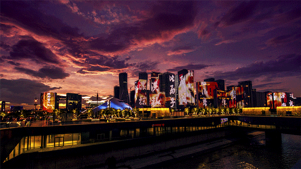

Bangkok


Geographical Location
Southeast Asia
Bangkok, Thailand’s capital, is a large city known for ornate shrines and vibrant street life. It is officially known in Thai as Krung Thep Maha Nakhon and colloquially as Krung Thep.
Bangkok welcomes more visitors than any other city in the world and it doesn’t take long to realize why. Bangkok is a city of contrasts with action at every turn. Marvel at the gleaming temples, catch a tuk-tuk through bustling Chinatown, or take a longtail boat through floating markets. Food is another Bangkok highlight, from local dishes served at humble street stalls to haute cuisine at romantic rooftop restaurants.
Photo Gallery
-

Khlong Lat Mayom water market
Khlong Lat Mayom, one of the best floating markets in Bangkok. It is most famous for its food. Try snakehead fish and the shrimps. -

White houses with golden top
The Grand Palace is a complex of buildings at the heart of Bangkok. -

Busy street of daytime Khao San Road
Khao San Road, which now represents a series of streets, is a place in downtown Bangkok where backpackers and tourists are immediately drawn to from when they first touch down in the airport. -

Wat Arun temple
Wat Arun is one of the most popular and well-known places of worship. Famous for its iridescent glow when first light hits its porcelain finish at dawn, it also resembles an ancient city at first glance.
Hangzhou
Geographical Location
Asia

Hangzhou, situated in eastern China, is a city that seamlessly blends ancient heritage with natural splendor. At the heart of its allure lies the iconic West Lake, a UNESCO World Heritage Site celebrated for its picturesque landscapes. Here, serene waters mirror the surrounding lush gardens, historic temples, and quaint tea houses, creating a tranquil oasis in the heart of the city. West Lake has been an enduring muse for poets, scholars, and artists for centuries, offering a captivating escape where willow trees gracefully sway, lotus flowers bloom, and visitors can glide across its waters on paddle boats, connecting with the city's deep-rooted love for nature.
Hangzhou is also famous for its Longjing tea, a prized variety of green tea cultivated in the nearby rolling hills. Enthusiasts can partake in traditional tea ceremonies, explore centuries-old tea plantations, and gain insight into the meticulous art of tea production passed down through generations. This rich tea culture, alongside the city's modernity and technological prowess, paints a vivid portrait of Hangzhou— a place where tradition harmonizes with innovation, making it a captivating destination for those seeking a glimpse into China's multifaceted cultural heritage.
Photo Gallery
-

West Lake is a UNESCO World Heritage Site in Hangzhou, China, celebrated for its serene waters, enchanting gardens, historic temples, and a profound cultural connection to classical Chinese landscapes.
-

Lingyin Temple, located near West Lake in Hangzhou, is a renowned ancient Buddhist temple known for its rich history, intricate architecture, and serene natural surroundings.
-

Alibaba Group is a multinational conglomerate based in China, known for its e-commerce platforms, cloud computing services, and digital technology innovations, playing a pivotal role in shaping the global digital economy.
Boston, Massachusetts


Geographical Location
North America
Boston, Massachusetts, is a city where American history comes to life. With its storied past, including the Boston Tea Party and the Battle of Bunker Hill, the city preserves its heritage through historic landmarks and the Freedom Trail. Beyond history, Boston is a vibrant cultural and academic center, home to renowned universities like Harvard and MIT, as well as world-class museums, theaters, and a thriving sports scene.
Boston's neighborhoods offer a diverse range of experiences, from the cobblestone streets of Beacon Hill to the trendy shops and restaurants of the South End. The city's green spaces, such as the Boston Common and the Emerald Necklace parks, provide a peaceful escape from the urban hustle, while the bustling waterfront and delicious seafood cuisine showcase its maritime roots. Boston's unique blend of history, culture, and local charm makes it a captivating destination for visitors and a beloved home for its residents.
Photo Gallery
-

Harvard University is an iconic Ivy League institution in Cambridge, Massachusetts, renowned for its academic excellence and historic prestige.
-

The Charles River is a picturesque waterway winding through the Boston metropolitan area, offering scenic views and recreational opportunities for residents and visitors alike.
-

Boston Common is a historic and beloved urban park located in the heart of Boston, serving as a tranquil oasis amid the city's hustle and a gathering place for both residents and tourists.